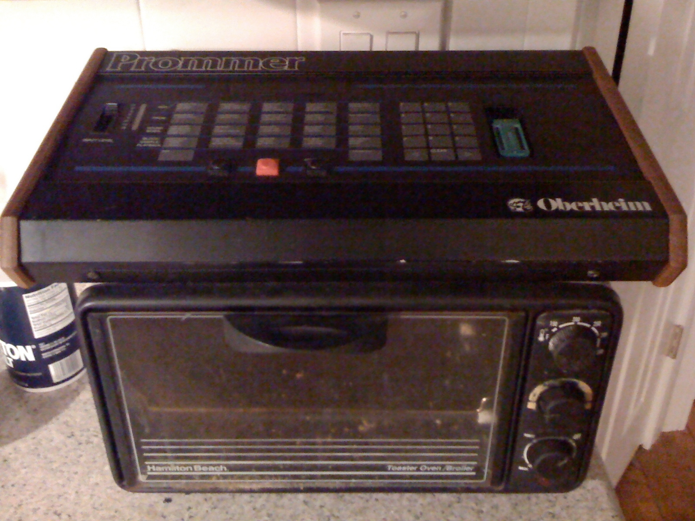

The Sound You Put in the Oven
The Oberheim Prommer was a drum-sound sampler whose output wasn't a file but a chip — and whose real interface wasn't the panel, or the preview button, but a fifteen-minute spell under an ultraviolet lamp.

Most of the machines in this museum keep their memory in something you can't see. A disk spins behind a slot; a chip sits under a keyboard. You say save, the machine says saved, and the only evidence is a menu item that appears. Saving is a gesture. The storage is somewhere else.
The Oberheim Prommer is not like that. It has a preview button so you can hear a sample before you keep it, and every interaction designer in the room will tell you where the interesting problem lives: the listen step, sitting right in front of an irreversible write. That reading is correct and it is not the whole story, because the Prommer's harder truth is this — its primary user interface is a lamp.
The Prommer is a monophonic sampler, made by Oberheim in 1984, whose job was narrower and stranger than "sampling." You fed it a sound, triggered it from MIDI or from Oberheim's older Parallel Buss, and when you were satisfied you burned that sound into an EPROM — an Erasable Programmable Read-Only Memory chip. The finished chip went into a cartridge and then into an Oberheim DMX, a Linn, a Simmons, a Sequential drum machine. Your drum kit's voice was now a piece of hardware you had installed yourself.
This is not how sound worked before. A drum machine's library was the manufacturer's decision, baked in at the factory and signed with a part number. The Prommer moved that decision to a kitchen table. Oberheim's own nickname for the machine, the ROM toaster, was more accurate than marketing usually manages: you put something in, an appliance hums, something comes out, and there are crumbs of error to clean up.
And there is a second, quieter object on the same shelf doing the same work from the opposite direction: the E-mu Drumulator. It is a $995 home drum machine, the mass-market cut-down of the studio pad machine, and its own swappable-voice idea came as Digidrums EPROM sets sold in stores — a chip you bought, installed, and played. Rock Drums, made by Rick Rubin as Beastie Groove for someone else's drum machine, played on Tears for Fears' "Shout." Both machines move the same object, a burnt chip, in opposite directions: the Drumulator answers a question the factory asked, and the Prommer lets you ask your own.

Here is where this machine stops resembling anything else I've written about.
In the museum's percussion thread, the argument is about what a drum is. The Linn LM-1 made the pads the program — reach for the drum you mean, tap it onto the bar. The Simmons SDSV took the resonant skin away, so the drum became a sensor asking for a voice. The Fairlight and the Synclavier, elsewhere on the shelves, treat sound as data held in expensive memory. All of those keep a representation of the sound and let you edit it. The Prommer hands you no representation. It hands you a chip.
Memory on an EPROM is a grid of floating-gate transistors. To program it, the Prommer fires a high voltage into the chip and electrons tunnel through an insulating layer onto the gates, where they stay. To unprogram it, you don't press delete and you don't flip a flag — nothing in the machine can undo what it just did. You slide the little quartz window out, walk the chip to a different box entirely, and leave it under a short-wave ultraviolet lamp for something on the order of twenty minutes while the trapped charge leaks away. Then the chip is blank and you may begin again.
So the Prommer's full interface is: capture, audition, burn, and then a timer you watch — on a device that isn't part of the instrument, in a place that isn't the studio. This is the only interface I know of whose "edit" button is an appliance in another room. A modern sampler's delete is instant, free, and invisible. This one costs a trip and a quarter-hour of patience, and its output — the chip — is the thing you own. If you've ever read about camera in-camera storage, and the small ceremony of a camera that writes onto a disc sealed in a caddy, this is that ceremony with the volume turned up.
The conceptual clue is that the interface surface has gone dark, or rather gone invisible, at exactly the moment the decision becomes permanent.
Compare it with the museum's other irreversible control: the Grass Valley switcher's T-bar. That one is honest the way a hammer is honest. Your hand is in the signal while two pictures cross in front of an audience, and there is no undo because the broadcast is already leaving the building. The Prommer is the opposite arrangement of the same material. Nobody is watching. You have all week. The preview lets you rehearse. And then the machine asks you to do something the panel doesn't quite say out loud: this sound will exist as a physical object you can hold, plug in, and play back on a hit record — and when you're done with it, part of what you'll be doing is waiting.
On a modern machine, committing is silent and reversible and therefore easy to do carelessly. The Prommer made committing a physical act with a warm period. The window is the neatest design detail in the collection: the medium shows you its own contents — UV burns the charge off it, and you can watch the answer become yes or no while you put the chip away.
There is one more thing I find quietly moving about this, and then I'll stop.
The Prommer's name promises something deeper than it delivers: the drum machine's sample was getting the same treatment as a read-only memory that had once held boot code or a cartridge game. A sound and a program were now the same kind of object — both were things you burned into a chip on a kitchen table. The Drumulator's Digidrums and the Prommer's blank chips were two ends of that: the factory shipping a program to you, and the user becoming a tiny factory for the sounds they wanted.
People talk about the "sample pack economy" as if it were a 21st-century invention. It is not. It is older than the drum machine itself: it is the moment hardware became a hand-off between a person holding a blank chip and a person holding a burnt one. The Prommer is the interface for the first half of that hand-off. It is also, I think, the most patient machine on these shelves — the only one whose idea of undo is "put it in the oven, and think about something else," and whose idea of save is a small piece of plastic you can carry to a friend's studio in your pocket.
I like a machine that admits the truth that most software hides: some of the things you make deserve to take time.